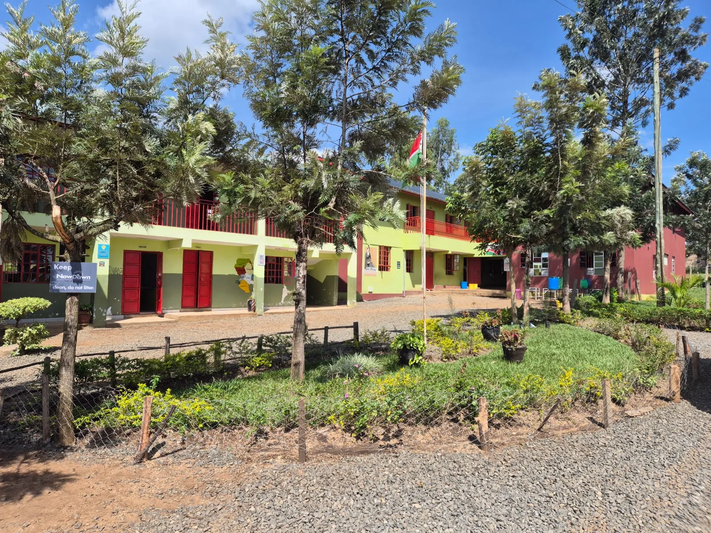
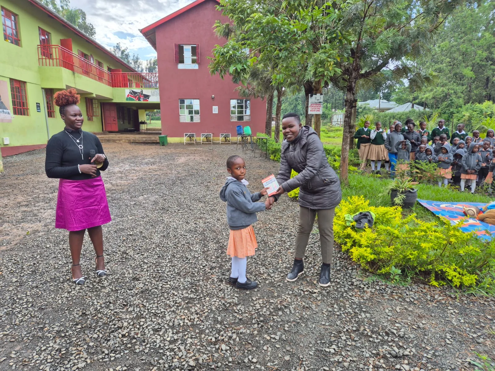

CBC foundations
Competency-based learning designed to help learners apply knowledge, skills, values and attitudes.

Our school
NewDawn is a growing CBC learning community built around care, curiosity, creativity and the belief that education should prepare the whole child.
The NewDawn story
NewDawn School is a private institution situated along the Bondo-Kisian Highway, just outside Bondo town.
The school serves the educational needs of Bondo Sub-County and welcomes learners from a culturally varied community. From its foundation in 2016, NewDawn has grown to serve more than 400 learners across pre-primary, primary and junior school.
Its academic programme is based on Kenya’s national Competency Based Curriculum and the school is registered with the Ministry of Education. English is the language of instruction for learners and staff.

A supportive environment
The campus provides dedicated areas for Early Childhood Development and Primary education, alongside specialised music spaces and digitally equipped Junior School classrooms.
Across academic, recreational and enrichment activities, the school is committed to maintaining a safe and supportive environment for learners and staff.
Experience school life ↗What shapes NewDawn
The school profile describes an environment where core learning is strengthened by language, music, reading and communication.
Competency-based learning designed to help learners apply knowledge, skills, values and attitudes.
Music instruction, reading sessions, spelling bees and debates create meaningful opportunities for expression.
Smart-board-equipped Junior School classrooms support interactive, digitally enabled learning.